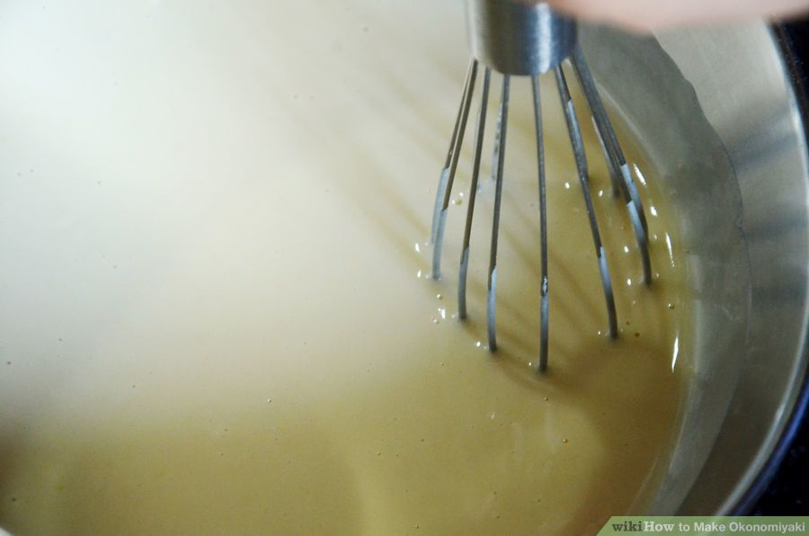
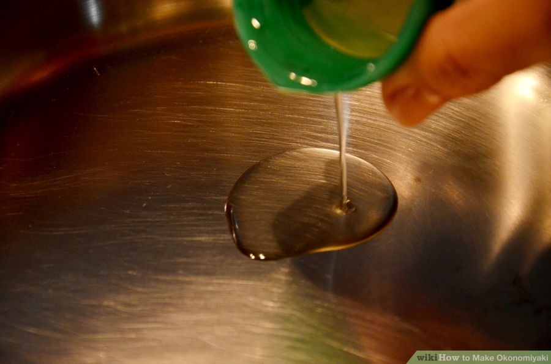

Any other veggies (ie. corn and spring onions) or meats (ie. cooked bacon or ham) that you like.
Cooking oil (little for frying)
Toppings:
Whole egg mayonnaise (or Japanese mayonnaise)
BBQ sauce (or Okonomiyaki sauce)
Seaweed flakes/dried fish flakes (optional)
Instructions
Mix the ingredients. Mix the flour, baking powder, and water (a little at a time)until it makes a smooth batter.
Then mix in the egg. Add shredded cabbage, and any other ingredients you like. Mix.

Prepare your cooking surface. Add a little vegetable oil to a frying pan and heat to medium-high heat.

Cook for a few minutes. Or until side start to brown. Flip and cook another few minutes.